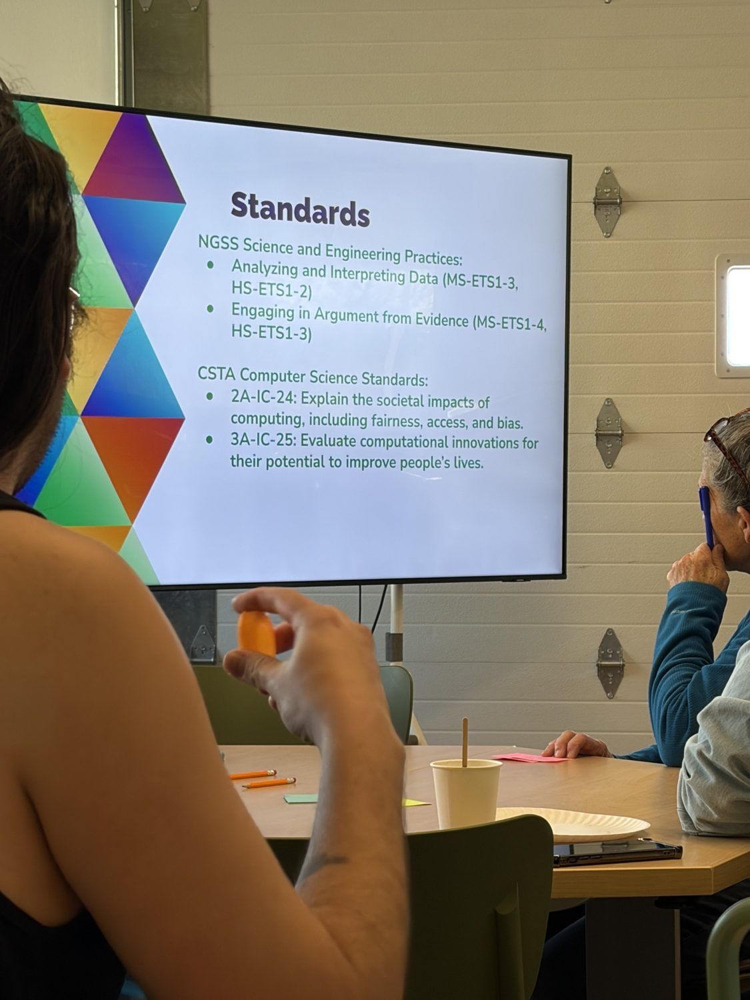
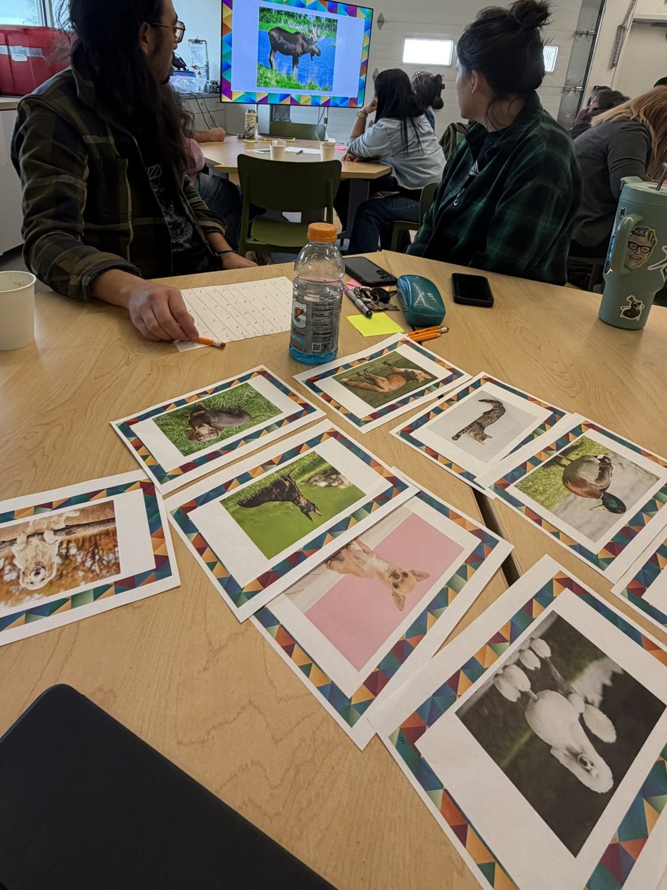
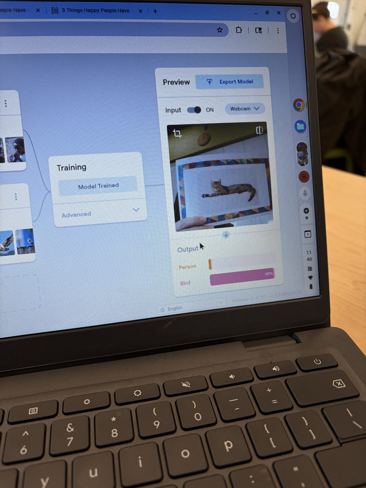
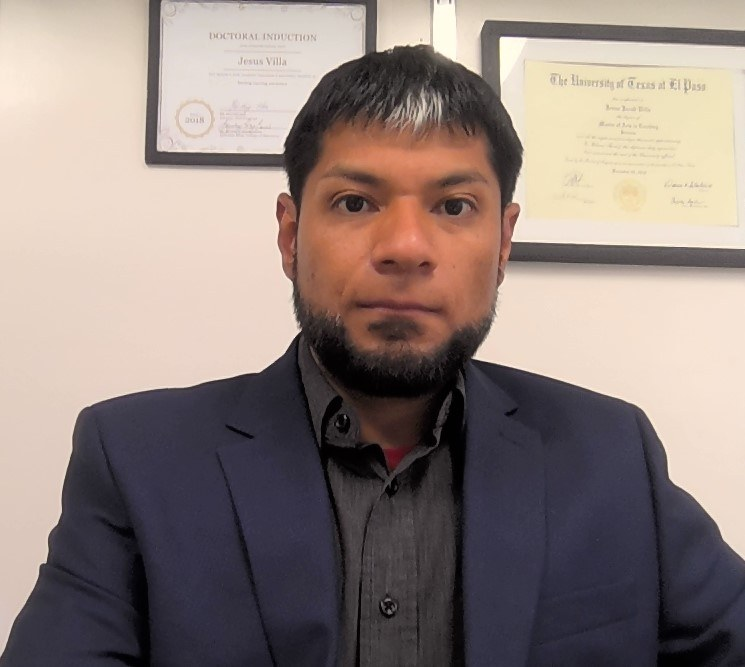

Future Ready Educators: A Culturally Responsive GenAI Literacy Framework
Future Ready Educators (FRE) advances culturally responsive and equitable generative AI literacy in K–12 education in New Mexico. The project begins with a practical question: how can teachers decide when, why, and how to use AI in ways that support learning, while retaining their professional judgment and protecting student agency?
Working with community and educational partners, FRE develops professional learning experiences grounded in realistic classroom decisions, local contexts, and the needs of culturally and linguistically diverse students and families. Rather than treating AI proficiency as simply mastering tools, the project emphasizes critical evaluation, responsible use, and the ability to recognize when AI assistance may not be appropriate.
The project connects research with teacher professional learning through the design, piloting, and refinement of accessible learning activities and resources. It aims to contribute practical insights for educators and a stronger foundation for future community-engaged AI literacy initiatives.



Project Committee

Jesus (Jacob) Villa, PhDLecturer III, Science EducationDeena Gould, PhDAssistant Professor, Science EducationJiarui XiePostdoctoral Scholar, Center on Education and Training for EmploymentCommunity Partner
Developed in collaboration with Explora, a science center in Albuquerque, New Mexico.
Research Funding & Support
Funding source: Research Allocation Committee (RAC)
Institution: University of New Mexico
Role: Lead PI